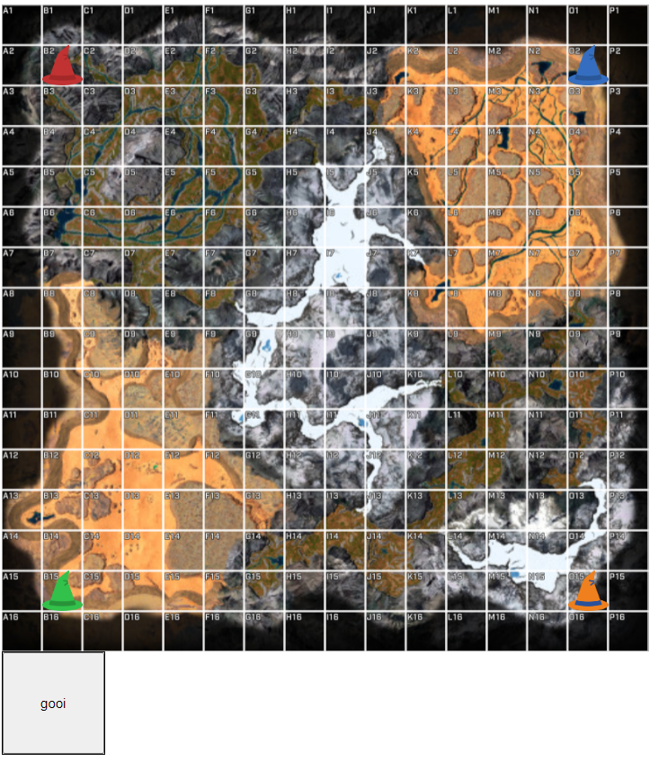

Gebruikte Technologieën
JavaScript
HTML5
CSS
Project Details
Een zelf ontwikkelde game met unieke gameplay elementen en interactieve features. Dit project toont mijn vaardigheden in game development en creatief programmeren.
Belangrijkste Features:
- Interactieve web-based interface
- Multiplayer ondersteuning
- Unieke karakters en abilities
- Score systeem
Technische Highlights:
- Geavanceerde JavaScript game engine
- Responsive design voor verschillende schermformaten
- Efficiënte collision detection
- Geoptimaliseerde performance
Bekijk project op GitHub
Bekijk de broncode en documentatie